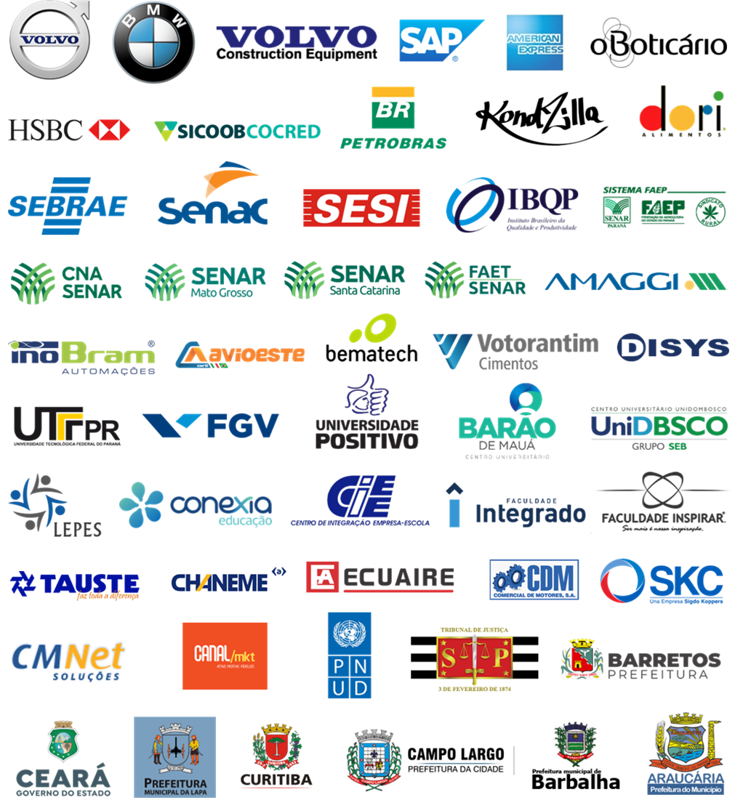

Consultoria em desenvolvimento humano e organizacional desde 1998
Nascemos em 1998 e atuamos com consultoria em desenvolvimento humano e organizacional. Com foco comportamental, treinamos educadores, gestores, líderes, liderados e empreendedores para que suas condutas sejam mais efetivas e o resultado esperado possa ser alcançado.
Ao mesmo tempo, propomos melhorias de processo, buscando a maturidade necessária para que a organização se estruture e crie condições para que as individualidades atuem de forma convergente.
Dessa forma, com uma metodologia própria, aliamos capacitação a uma trajetória de desenvolvimento organizacional, evoluindo processos e potencializando resultados — até mesmo dos profissionais mais experientes.
Dr. Celso Garcia
PhD em Psicobiologia pela USP | Mestre em Administração de Empresas
Graduado em Psicologia, com ampla formação em gestão, inovação e comportamento organizacional. É pesquisador do CNPq, professor da FGV, especialista em andragogia e referência internacional na formação de educadores corporativos.
Com mais de 13 mil horas em dinâmica de grupo, é o autor da Academia Andina de Andragogia, aplicada em diversos países da América Latina. Seu trabalho foi citado no último Relatório de Desenvolvimento Humano da ONU.
Somos especialistas em aprendizagem. Ao longo dos anos, nos dedicamos a compreender os processos psicológicos envolvidos na aquisição de competências.
Para nós, aprender implica em mudar um comportamento — por isso, acreditamos no poder do método e no papel essencial do educador no processo de transformação.
Nosso diferencial: somos especialistas em andragogia e processo grupal — associando o desenvolvimento coletivo ao desenho instrucional.
“Ao longo de nossa trajetória, tivemos a honra de colaborar com empresas líderes em seus setores, promovendo desenvolvimento humano com resultados concretos.”
Email: pensare@pensare.com.br
Telefone / WhatsApp: (41) 9999-11943
Endereço: Av. Sete de Setembro, 4698, conjunto 1605 – Batel – Curitiba/PR – CEP 80240-000